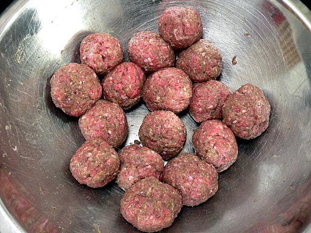
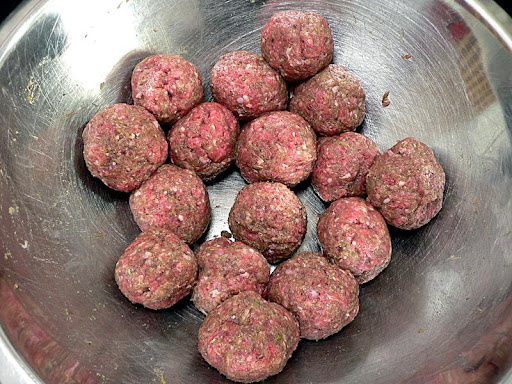

Use JavaScript to display the following information here:
The URL of this page is:
The number of H2 items for this page:
The current date/time is:
Thank you for visiting!
Meatballs

Side
Originated in Persia
Meatballs are a great addition to spaghetti and other dishes. They can be served on their own or on top of spaghetti.You can have chicken, beef, or pork meatballs.
Recipe Ingredients
- Breadcrumbs
- Parmesean
- Garlic Powder
- Onion Powder
- Italian Seasoning
- Salt
- Pepper
- Eggs
- Whole Milk
- Italian Sausage
- Ground Beef
Recipe Steps
- In a small bowl, combine the breadcrumbs, Parmesan, garlic powder, onion powder, Italian seasoning, salt, and pepper. In a separate small bowl, lightly whisk the two eggs.
- Add the breadcrumb mixture, eggs, milk, Italian sausage, and ground beef to a large bowl. Use your hands to mix the ingredients together until evenly combined. Avoid over mixing the meat.
- Let the meatball mixture rest for five minutes to allow the breadcrumbs time to soften. Divide and shape the meat into about 32 meatballs, approximately 2 Tbsp in volume each.
- Bake the meatballs for about 15 minutes, or until lightly browned.
Additional Food Images
 

Spaghetti

Side
Originated in Italy
Spaghetti is an easy pasta dish to prepare that is delicious. It can be served with a variety of sauces such as marinara, alfredo, or pesto. It is best topped with meatballs.
Recipe Ingredients
- Pasta
- Marinara Sauce
- Salt
- Water
Recipe Steps
- Boil water with a little bit of salt.
- Add uncooked pasta to boiled water and let cook.
- When soft, strain pasta.
- Top with sauce of choice and serve.
Additional Food Images
Chocolate Chip Cookies

Dessert
Originated in Massechusetts
Chocolate chip cookies are a fantastic classic dessert. They are easy to make and loved by all. One can add as many or as little chocolate chips to adjust the sweetness to their liking! I have been making chocolate chip cookies since I was little.
Recipe Ingredients
- Butter
- Eggs
- Vanilla
- Baking Soda
- Water
- Salt
- Flour
- Chocolate Chips
Recipe Steps
- Beat the butter and sugars, then beat in the eggs and vanilla.
- Dissolve the baking soda in hot water and add to the mixture.
- Stir in the flour and chocolate chips.
- Put dough onto baking sheet.
- Bake until cookies are golden brown.